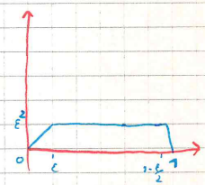

Elementi di Calcolo delle Variazioni
Il calcolo delle variazioni nasce con il seguente.
Problema (della brachistocrona). Tra tutte le curve che congiungono due estremi $O$ e $P$ in un piano verticale, determinare quella che minimizza il tempo di percorrenza di un corpo vincolato sulla curva, lasciato con velocità nulla nel punto $O$ e soggetto alla forza di gravità.
Mettiamo degli assi cartesiani ortogonali centrati nel punto $O$ con l'asse delle $x$ orientato verso il basso e l'asse delle $y$ orizzontale. Siano $a$ e $b$ le coordinate del punto $P$. Supponiamo che la curva si possa scrivere nella forma $y=u(x)$. Avremo dunque le condizioni: $u(0)=0$ e $u(a) = b$. Per la conservazione dell'energia abbiamo $\frac 1 2 m v^2 = m g x$ da cui $v = \sqrt{2g x}$. Tale velocità ha direzione tangente alla curva e la sua componente verticale $v_x$ è data da $v_x = \frac{v}{\sqrt{1+(u'(x))^2}}$. Avremo allora che il tempo impiegato per andare dal punto $0$ lungo la curva fino al punto $P$, è dato da $$ T = \int_0^a \frac{1}{v_x}\, dx = \int_0^a \frac{\sqrt{1+(u'(x))^2}}{\sqrt{2gx}}\, dx. $$
La nostra incognita è la funzione $u$ che supponiamo essere di classe $C^1$ per dare senso ai calcoli fatti sopra e dovrà soddisfare le condizioni al bordo $u(0)=0$ e $u(a)=b$. Siamo quindi interessati a cercare la soluzione $u\in U$ nell'insieme delle funzioni: $$ U = \ENCLOSE{u\in C^1([0,a])\colon u(0)=0, u(a)=b}. $$ Si noti che $U$ è un sottospazio affine dello spazio vettoriale $C^1([0,a])$ infatti si ha $$ U-U = \ENCLOSE{u_1-u_2\colon u_1\in U, u_2\in U} = \ENCLOSE{u\in C^1([0,a])\colon u(0)=u(a)=0} = C^1_0([0,a]) $$ che è un sottospazio vettoriale di $C^1$.
Il nostro problema è quindi quello di trovare un minimo del funzionale $$ \F \colon U \to \mathbb R,\\ \F(u) = \int_I f(x, u(x), u'(x)) \, dx $$ con $I=[0,a]$ e $f(x,z,p)=\frac{\sqrt{1+p^2}}{\sqrt{2gx}}$. Un funzionale scritto in questa forma è chiamato funzionale classico del calcolo delle variazioni.
Equazione di Eulero-Lagrange
Se $U$ è uno spazio affine sullo spazio vettoriale $V$ data $\phi\in V$ la restrizione del funzionale $\F$ alla retta passante per $u$ con direzione $\phi$ è data da $$ g(t) = \F(u+t\phi). $$ Se $u$ è un punto di minimo del funzionale $\F$ allora $0$ dovrà essere punto di minimo per $g$ e se $g$ è derivabile si avrà quindi $g'(0)=0$.
La derivata $g'(0)$ non è altro che la derivata direzionale $\frac{\partial F}{\partial \phi}(u)$ (chiamata derivata di Gateaux, nel contesto degli spazi di dimensione infinita). La funzione $\phi$ rappresenta una variazione della nostra funzione $u$. In opportune ipotesi la condizione $g'(0)=0$ si traduce in una equazione differenziale, come enunciato nel seguente.
Teorema (equazione di Eulero-Lagrange) Sia $u\in C^2([a,b])$ e sia $f=f(x,z,p)$ una funzione di classe $C^2$ definita in un intorno della curva $x\mapsto (x,u(x),u'(x))$. Se $\F(u)$ è minimo allora in $u$ si ha $$ f_z = \frac{d}{dx} f_p $$ cioè, più esplicitamente, $$ f_z (x,u(x),u'(x)) = \frac{d}{dx} \Enclose{f_p(x,u(x),u'(x))}. $$
Dimostrazione. Si ha $$ \frac{\partial F}{\partial \phi}(u) = \Enclose{\frac{d}{dt}\int_I f(x,u+t \phi,u'+t\phi')\, dx}_{t=0}. $$ Se $f$ è di classe $C^1$ in un intorno della curva $x\mapsto (x,u(x),u'(x))$ allora posso scambiare la derivata con l'integrale: $$ \Enclose{\frac{d}{dt} \int_a^b f(x,u+t\phi,u'+t\phi')}_{t=0} = \int_a^b \left[ f_z(x,u,u') \phi + f_{p}(x,u,u') \phi' \right] \, dx. $$ Se ora $f$ è di classe $C^2$ e anche $u$ lo è, possiamo integrare per parti e ottenere $$ = \int_a^b \enclose{f_z(x,u,u') -(f_p(x,u,u'))_x } \phi(x) \, dx. $$ In base al lemma seguente concludiamo che $$ f_z = \frac{d}{dx} f_p. $$
Lemma (fondamentale del calcolo delle variazioni). Se $g\in C^0([a,b])$ e $\int_a^b g(x)\phi(x)\, dx = 0$ per ogni $\phi\in C_c^\infty([a,b])$ allora $g(x)=0$ per ogni $x\in [a,b]$.
Dimostrazione. Se fosse $g(x_0) > 0$ con $x_0\in (a,b)$ allora esiste un intorno $I$ di $x_0$ tale che $g(x) > 0$ per ogni $x\in I$. Ma è possibile costruire $\phi\in C_c^\infty([a,b])$ tale che $\phi(x_0)> 0$, $\phi(x)\ge 0$ per ogni $x\in I$ e $\phi(x) = 0$ per ogni $x\not \in I$. Chiaramente si avrebbe $\int_a^b g(x)\phi(x)\, dx = \int_I g(x)\phi(x)\, dx > 0$, contro l'ipotesi. Allo stesso modo si procede se $g(x_0) < 0$. Se poi $g$ si annulla su tutto $(a,b)$ per continuità si annulla anche su $[a,b]$.
Nel caso del problema della brachistocrona abbiamo $f(x,z,p) = \frac{\sqrt{1+p^2}}{\sqrt {2gx}}$ e quindi $f_z=0$, $f_p = \frac{p}{\sqrt{1+p^2}\sqrt {2gx}}$. L'equazione di Eulero-Lagrange diventa quindi $$ \frac{d}{dx}\frac{u'}{\sqrt{2gx}\cdot \sqrt{1+u'^2}} = 0. $$ Dunque esiste una costante $c$ per cui $$ \frac{u'}{\sqrt{x}\cdot \sqrt{1+u'^2}} = c. $$ Elevando al quadrato $$ (u')^2 = c^2\cdot (1+u'^2)\cdot x $$ da cui $$ (u')^2 = c^2 \cdot \frac{x}{1-c^2\cdot x} = c^2 \cdot \frac{x^2}{x-c^2 x^2} $$ supponendo $u'>0$ $$\begin{align*} u'(x) &= \frac{cx}{\sqrt{x-c^2x^2}} = \frac{cx}{\sqrt{\frac 1{4c^2} - \enclose{cx - \frac 1{2c}}^2}} \\ &= \frac{2c^2 x}{\sqrt{1-(2c^2 x - 1)^2}}. \end{align*}$$ Dunque integrando e facendo il cambio di variabile $s=1-2c^2 x$ si ottiene $$ \begin{align*} u(x) &= \int_0^x \frac{2c^2x}{\sqrt{1-(2c^2 x - 1)^2}}\, dx \\ &= \frac{1}{2c^2}\int_1^{1-2c^2x} \frac{s-1}{\sqrt{1-s^2}}\, ds \\ &= \frac{1}{2c^2}\Enclose{-\sqrt{1-s^2}+\arccos s}_1^{1-2c^2x} \\ &= R\Enclose{\arccos\enclose{1-\frac x R} - \sqrt{1-\enclose{\frac x R -1}^2}} \\ &= R \arccos\frac{R-x}{R} - \sqrt{R^2 - (x-R)^2} \end{align*} $$ dove abbiamo posto $R=\frac 1 {2c^2}$. Si può facilmente riconoscere che $u(x)$ è l'equazione di una cicloide ovvero che il punto $P(x) = (x,u(x))$ si trova sulla circonferenza di raggio $R$ che rotola al di sotto dell'asse $x$. Infatti se $\theta$ è l'angolo di rotazione di tale circonferenza, si avrà $$ \begin{cases} x = R - R \cos\theta \\ y = R\theta - R\sin\theta \end{cases} $$ da cui si ottiene $\theta = \arccos \frac{R-x}{R}$ e quindi $$ y = R\arccos\frac{R-x}{R} - \sqrt{R^2 - (x-R)^2} = u(x). $$
La soluzione che abbiamo trovato è solamente il primo arco di cicloide, dove $u'>0$. Il secondo arco (dove il punto materiale risale rallentando) si trova scegliendo il segno opposto quando si estrae la radice quadrata.
La costante $R$ può essere univocamente determinata dal passaggio dal punto $P$ ovvero dalla condizione $u(a) = b$. Si nota infatti che al variare di $R$ le curve che abbiamo trovato sono tutte tra loro omotetiche. Se disegno una qualunque di queste curve, ad esempio quella con $R=1$ e considero la semiretta uscente da $O$ e passante dal punto $P=(a,b)$, tale semiretta incontrerà la curva in un singolo punto, in quanto possiamo verificare che tale curva è concava. Allora basterà riscalare la curva in modo da ottenere (in modo unico) il passaggio dal punto dato.
Weierstrass: l'esistenza non è garantita
Nei paragrafi precedenti abbiamo mostrato che se c'è una soluzione di classe $C^2$ del problema della brachistocrona allora tale soluzione può essere univocamente identificata in una particolare cicloide. Significa che se c'è una soluzione di classe $C^2$ allora l'abbiamo trovata. Ma nulla ci dice che la soluzione esista, e se esiste non possiamo immediatamente affermare che sia di classe $C^2$. Per convincerci di ciò facciamo dei semplici esempi.
Problema 2. Minimizzare il funzionale: $$ \F(u) = \int_{-1}^1 \Enclose{1-u'(x)^2}^2\, dx $$ tra le funzioni $u\in C^1_0([-1,1],\R)$.
La funzione integranda è sempre non negativa e si annulla quando $u'(x)=\pm 1$. Dunque una funzione con la proprietà $\abs{u'(x)}=1$ sarebbe senz'altro un minimo assoluto di questo funzionale. E' facile verificare che nessuna funzione derivabile può soddisfare questa condizione e contemporaneamente assumere lo stesso valore ai due estremi dell'intervallo. La funzione $u(x) = 1-\abs{x}$, viceversa, soddisfa la condizione in tutti i punti tranne $x=0$ (dove non è derivabile) e in effetti annulla il funzionale se ci accontentiamo che la derivata esista quasi ovunque. D'altra parte ci sono funzioni $C^1_0$ che approssimano questa funzione derivabile e che danno valori arbitrariamente piccoli al funzionale.
Dunque siamo nella situazione in cui il minimo non esiste nella classe $C^1_0$ ma esiste in una classe più ampia. Questo ci porta a pensare che per avere esistenza del minimo sia necessario considerare una classe più ampia di funzioni. D'altra parte le cose possono anche andare peggio, come mostra l'esempio seguente.
Problema 3. Minimizzare il funzionale: $$ \F(u) = \int_{-1}^1 \Enclose{1-u'(x)^2}^2 + \Enclose{u'(x)}^2\, dx $$ tra tutte le funzioni $u\in C^1([-1,1])$.
Come nell'esempio precedente il funzionale non è mai negativo e quindi se si ottiene un valore nullo questo sarà il minimo assoluto. D'altra parte visto che $\F(u)$ è la somma di due quantità positive se risulta nullo dovrà essere nullo $\int_{-1}^1 \Enclose{u(x)}^2\, dx$ ma questo può succedere solo se $u(x) = 0$ quasi ovunque. Ma in tal caso se $u$ è derivabile (in qualche senso) dovrà essere $u'(x)=0$ e quindi il primo addendo del funzionale (che è quello considerato nel problema precedente) dà un contributo pari a $1$.
Possiamo però costruire funzioni di classe $C^1$ (ma anche di classe $C^\infty$) che rendono il valore $\F(u)$ arbitrariamente piccolo. Basterà considerare funzioni a denti di sega con derivata quasi sempre pari a $1$ o $-1$ e valore compreso tra $0$ ed $\epsilon$.
Abbiamo quindi un esempio di un funzionale che non ha minimo neanche ampliando la classe delle funzioni considerate.
convessità
I funzionali considerati nei due esempi precedenti sono della forma classica del calcolo delle variazioni con lagrangiane: $$ f_2(x,z,p) = (1-p^2)^2, \qquad f_3(x,z,p) = (1-p^2)^2 + z^2. $$ Il problema della brachistocrona invece aveva lagrangiana $$ f(x,p) = \frac{\sqrt{1+p^2}}{\sqrt x}. $$ Il vantaggio fondamentale di quest'ultimo problema è che la lagrangiana non dipende da $z$ e risulta essere convessa rispetto alla variabile $p$ per ogni $x$ fissato (cosa che non avviene per $f_2$ e $f_3$). Vediamo come questa proprietà ci permette di dimostrare che la cicloide, essendo soluzione dell'equazione di Eulero-Lagrange, è effettivamente un minimo del funzionale.
Per verificare che $f$ è convessa rispetto a $p$ basta farne le derivate: $$ f_p = \frac{p}{\sqrt{1+p^2}\sqrt x}, \\ f_{pp} = \frac{1+p^2-p^2}{(1+p^2)^{3/2}\sqrt x}. $$
Dunque la funzione sta sopra la sua retta tangente in qualunque punto $p_0$. Se $f(x,p)$ è convessa rispetto a $p$ per ogni $x$, allora per ogni $p_0$ il grafico di $f$ sta sopra la retta tangente in tale punto: $$ f(x,p) - f(x,p_0) \geq f_p(x,p_0)\cdot (p-p_0). $$ Sia ora $u_0$ la soluzione dell'equazione di Eulero-Lagrange (la cicloide nel nostro caso). Per ogni $x$ possiamo scegliere $p_0=u_0'(x)$ per ottenere $$ f(x,u'(x)) - f(x,u_0'(x)) \geq f_p(x,u_0'(x))\cdot (u'(x)-u_0'(x)) $$ e integrando su $[0,a]$ si ottiene $$ \F(u)-\F(u_0) = \int_0^a f_p(x,u_0,u_0')(u'-u_0')\, dx. $$ Ma l'equazione di Eulero-Lagrange ci diceva che $f_p=c$ è costante (in questo caso particolare, in quanto $f_z=0$) e dunque $$ \F(u)-\F(u_0) = c \int_0^a (u'-u_0')\, dx = c \Enclose{u-u_0}_0^a = 0 $$ in quanto $u(0)=u(a)=u_0(0)=u_0(a)=0$. Abbiamo quindi dimostrato che $u_0$, la nostra cicloide, è un minimo assoluto nella classe di tutte le funzioni $C^1$ con condizione al bordo fissate.
Estremali, estremali deboli
Diremo che $u$ è un estremale debole per il funzionale $\F$ se per ogni variazione $\phi$ la derivata di $\F$ nella direzione $\phi$ è nulla: \[ 0 = \delta\F(u,\phi) = \frac{\partial\F(u)}{\partial \phi} = \Enclose{\frac{d}{d\eps}\F(u+\eps\phi)}_{\eps=0}. \] Chiaramente se $\F$ ha minimo in $u$ allora $u$ è un estremale debole, come abbiamo già osservato. Per avere un estremale debole è sufficiente la minimalità locale (ovvero per piccole variazioni). Ma questa non è una condizione necessaria. Come per le funzioni di una variabile è infatti possibile avere punti critici (estremali deboli) che non sono né punti di massimo né punti di minimo, neanche localmente. L'esempio più semplice è $f(p)=p^3$ che ci fornisce anche l'esempio con i funzionali del calcolo delle variazioni.
Problema 3. Minimizzare il funzionale: \[ \F(u) = \int_0^1 u'(x)^3\, dx \] sulla classe $C^1_0([0,1])$.
Osserviamo che la lagrangiana è $f(x,z,p) = p^3$ e l'equazione di Eulero Lagrange $(f_p)'=f_z$ diventa $3(u')^2 = m$ (costante) ovvero $u(x) = mx + q$. Ma dalle condizioni al bordo dovrà essere $m=0$ e $q=0$ quindi l'unica soluzione dell'equazione di E-L è $u(x)=0$. D'altra parte con un po' di attenzione è possibile costruire funzioni $u_\eps$ tali che $\F(u_\eps)\to -\infty$ quando $\eps\to 0$. Bisogna osservare che una funzione con lo stesso valore agli estremi dell'intervallo deve avere una derivata con media nulla: $\int_0^1 u' = u(1) - u(0) = 0$. Il termine $p^3$ dà un contributo negativo quando la derivata è negativa, ma non posso avere derivata negativa senza avere anche la corrispondente derivata positiva (la media è nulla).  L'idea è però posso avere un tratto con pendenza negativa molto ripido e compensarlo con un tratto a pendenza positiva ma meno ripido. Nel complesso il contributo dato dal tratto ripido, anche se più breve, sarà maggiore di quello dato dal tratto meno ripido, anche se più lungo. Lo si può fare con una funzione come quella nel disegno. Chiaramente la funzione può essere approssimata da funzioni $C^1$ (o anche $C^\infty$) senza modificare di molto il funzionale.
Condizione di Eulero-Lagrange Se $u$ è un estremale debole per il funzionale classico $\F$ con condizioni al bordo fissate, se $u\in C^2$ e anche $f\in C^2$ almeno in un intorno aperto della curva $(x,u(x),u'(x))$, allora vale l'equazione di Eulero-Lagrange: \[ \frac{d}{dx} f_p = f_z. \]
Dimostrazione. Già visto sopra. Si tratta eventualmente di verificare che bastano le ipotesi di regolarità appena enunciate.
Le $u$ che soddisfano l'equazione di E-L sono chiamate estremali. Dunque il teorema precedente afferma che estremali deboli sono estremali. \[ \text{minimo} \implies \text{minimo locale} \implies \text{estremale debole} \Longleftarrow \text{estremale}. \]
Posso costruire esempi di funzioni
Equazione di Newton La lagrangiana $f(t,x,v) = \frac 1 2 m v^2 - V(x)$ ha come equazione di E-L: \[ - V_x = m x'' \] che non è altro che l'equazione di Newton $F = ma$.
Calibrazioni, campi ottimali
Se vogliamo dimostrare che $u_0$ è effettivamente un minimo del funzionale $\F$ dobbiamo mostrare che $\F(u)\ge \F(u_0)$ per ogni competitore $u$. Supponiamo ora che la classe dei competitori abbia dato al bordo assegnato: $u(a)=u_a$ e $u(b)=u_b$. In tal caso osserviamo che è possibile costruire delle lagrangiane nulle. Se prendiamo una funzione del tipo \[ M(x,z,p) = S_x(x,z) + p \cdot S_p(x,z) \] si osserva che \[ M(x,u(x),u'(x)) = \frac{d}{dx} S(x,u(x)) \] e dunque il funzionale \[ \M(u) = \int_a^b M(x,u(x),u'(x))\, dx =\Enclose{S(x,u(x))}_{x=a}^b \] è costante su ogni competitore. Se dunque riusciamo a trovare $S$ e di conseguenza $M$ tali che $F(x,z,p) \ge M(x,z,p)$ e $F(x,u_0(x),u_0'(x)) = M(x,u_0(x),u_0'(x))$, allora si avrà chiaramente \[ \F(u) \ge \M(u) = \M(u_0) \] e dunque sarà dimostrato che $u_0$ è un minimo del funzionale $\F$. Un modo per costruire $S$ è quello di ricavare $S$ da una fibrazione dello spazio $(x,z)$ tramite una famiglie di curve che contiene il grafico di $u_0$. In generale consideriamo il grafico $z=u_0(x)$ ed un intorno $G$ di tale grafico nel piano $(x,z)$. Supponiamo ora di avere una famiglia di funzioni $u_c(x)$ definite per $c$ in un intorno di $0$ in modo tale che per $c=0$ si abbia $u_c(x)=u_0(x)$ e che i grafici di $u_c(x)$ riempiano l'intorno $G$ senza mai intersecarsi tra loro. Questo si ottiene tramite una funzione $f=f(x,c)$ che manda un rettangolo $\Gamma=[a,b]\times [-\eps,\eps]$ nell'intorno $G$ del grafico di $u_0$ in modo che sia $f(x,c) = (x, u_c(x))$ con $f:\colon \Gamma\to G$ bigettiva. Un tale campo si dice campo adattato ad $u_0$. La fibrazione $f$ induce un campo di pendenze che denotiamo con $\P$: $\P(x,z) = u_c'(x)$ dove $c=f^{-1}(x,z)$. Diremo che il campo $\P$, adattato a $u_0$, è ottimale per il funzionale $\F$ in $u_0$ se esiste una funzione $S(x,z)$ tale che posto $M(x,z,p) = S_x(x,z) + p \cdot S_p(x,z)$ risulta \[ F(x,z,p) \ge M(x,z,p) \qquad\text{e}\qquad F(x,u_0(x),u_0'(x)) = M(x,u_0(x),u_0'(x)) \] per ogni $(x,z)\in G$ e per ogni $p\in \RR$. Questo ovviamente implica che \[ \F(u) \ge \M(u) = \M(u_0) = \F(u_0) \] per ogni $u$ con grafico dentro $G$ e quindi garantisce che $u_0$ è il minimo di $\F$ nell'intorno $G$. Si noti che stiamo ottenendo un minimo locale in topologia $C^0$ e non in $C^1$. Per costruire $S$ dobbiamo identificarne delle proprietà. Se vogliamo che $S$ renda $f$ ottimale bisogna che $S$ soddisfi le equazioni di Caratheodory: \[ \begin{align*} S_x(x,z) &= F(x, z, \P(x,z)) - \P(x,z)\cdot F_p(x,z,\P(x,z)) \\ S_z(x,z) &= F_p(x,z,\P(x,z)). \end{align*} \] Infatti, se $S$ soddisfa le equazioni di Caratheodory, si ha \[ F(x,z,\P) = \]